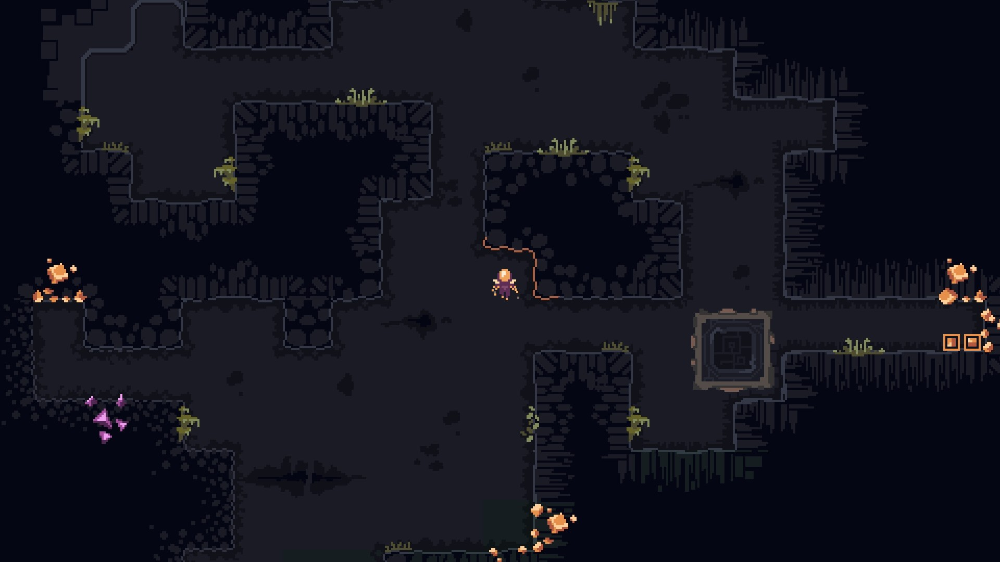

Diseño de Dome Keeper
Diego Herrera Mendoza
Personalmente, llevaba mucho tiempo con el ojo echado en un juego concreto: Dome Keeper. De hecho, desde que el juego estaba en acceso anticipado ya había captado mi atención. A pesar de tener un diseño y jugabilidad simple, el concepto me atrapó al instante. Hace poco fue cuando decidí comprarlo y probar de verdad si no era una simple corazonada. Y vaya que no lo era, pero ¿por qué? En este análisis trato de encontrar respuesta a la adicción que genera este juego a pesar de no tener una complejidad extravagante.
El juego:
Dome Keeper trata de mantener a salvo un domo de oleadas de criaturas alienígenas que intentan destruirlo. Cuantas más oleadas sobrevivimos, más difíciles se vuelven las siguientes. La forma que tenemos de combatir ese incremento de dificultad es comprar mejoras gastando recursos que hayamos obtenido en expediciones en el subsuelo del planeta. El juego cuenta con varios modos, siendo el principal el modo “caza de reliquias” en el que tenemos que encontrar un elemento escondido en el subsuelo y llevarlo al domo para acabar la partida con una oleada final. Por otro lado, están el modo 'Prestigio', que se centra en resistir el mayor tiempo posible, y el modo 'Asignación del Gremio', que introduce pequeños desafíos adicionales o plantea objetivos diferentes para las partidas.Accesibilidad:
Dome Keeper destaca por sus controles simples e intuitivos, permitiendo a los nuevos jugadores familiarizarse rápidamente con las mecánicas de recolección y defensa. Con unas cuantas expediciones cualquiera podría adaptarse y hacer una estrategia acorde a sus objetivos. El enfoque minimalista del diseño complementa esta accesibilidad. La estética pixelada no solo es visualmente atractiva, sino que también sirve para diferenciar los elementos clave del entorno, asegurando que los jugadores puedan tomar decisiones rápidas y eficientes. La claridad en los gráficos y el diseño de los menús contribuyen a una experiencia inmersiva, haciendo que acostumbrarse a la interfaz sea muy sencillo. Además, la accesibilidad se ve reforzada por la ausencia de una curva de aprendizaje abrupta. Los tutoriales son sencillos y las mecánicas se presentan de manera gradual, asegurando que incluso quienes no están acostumbrados a este tipo de juegos puedan disfrutarlo plenamente desde sus primeras partidas.Simplicidad:
Lo que hace que la simplicidad de Dome Keeper sea tan efectiva es la claridad con la que presenta sus objetivos. Cada mecánica está diseñada para ser directa y accesible. Sin embargo, el juego se asegura de que estas mecánicas no sean del todo planas. Por ejemplo, las decisiones aparentemente simples, como cuánto tiempo dedicar a explorar en lugar de regresar al domo para prepararse para la próxima oleada, a menudo tienen consecuencias importantes, lo que introduce una tensión constante en el flujo del juego. Las opciones de personalización y las distintas mejoras disponibles también añaden una capa de complejidad. La defensa del domo inicialmente se basa en mover un láser de izquierda a derecha y disparar, pero a medida que jugamos vamos desbloqueando más formas de defendernos de los enemigos o de hacer la recolección más sencilla. Desde drones automatizados tanto para recolección como para ataque hasta misiles teledirigidos. El jugador tiene que encontrar el balance para hacer que su defensa sea efectiva y su recolección sea rápida y eficiente. Además, el juego presenta desafíos que, aunque simples en su diseño, requieren una estrategia bien pensada. Por ejemplo, decidir en qué momento invertir en velocidad de movimiento o en capacidad de carga puede determinar si un jugador logra recolectar suficientes recursos antes de la siguiente oleada. El minimalismo del juego también se extiende al diseño de sus sistemas, que eliminan elementos innecesarios para centrarse únicamente en lo esencial. Esto significa que los jugadores no tienen que preocuparse por aprender mecánicas secundarias o lidiar con interfaces complicadas. Todo está diseñado para facilitar la experiencia, desde el mapa hasta las indicaciones visuales y sonoras que avisan de las oleadas.Diseño de niveles:
Los niveles generados proceduralmente garantizan una experiencia refrescante en cada partida. Este enfoque asegura que los mapas nunca sean iguales, así como la distribución de recursos y los enemigos que aparecerán en las oleadas, lo que mantiene el interés del jugador. Además, los mapas están diseñados para incentivar la exploración estratégica, recompensando a los jugadores que se aventuran más lejos con mayor cantidad de recursos pero a costa de arriesgar más tiempo y exponerse a ataques. Al mismo tiempo que el jugador se aleja del domo, la roca que tiene que atravesar cada vez es más resistente, lo que lo obliga a mejorar su equipamiento de minería en algún momento. La generación procedural también introduce una sensación de incertidumbre y descubrimiento constante. Nunca se sabe exactamente qué se encontrará bajo el subsuelo, lo que añade un elemento de sorpresa. El diseño de niveles juega con la psicología del jugador, fomentando una curiosidad constante por explorar más y haciendo que quiera arriesgar un poco más de tiempo por un extra de recursos. Los detalles de los niveles no se limitan solo a la distribución de recursos, sino también a cómo se introducen mecánicas específicas para alterar la jugabilidad. Por ejemplo, algunas áreas pueden tener zonas más densas de roca que ralentizan el progreso, mientras que otras pueden incluir recursos ocultos que ofrecen recompensas significativas si se encuentran. Estos pequeños matices añaden una capa adicional de estrategia y profundidad al diseño de niveles, haciendo que cada partida sea una nueva oportunidad para aprender y experimentar. Jugabilidad principal:
El ciclo de juego se divide en la minería y la defensa del domo. La minería proporciona una sensación constante de progreso, permitiendo a los jugadores recolectar recursos que pueden ser utilizados para mejorar su equipamiento, desbloquear nuevas habilidades o reforzar la defensa del domo. Por otro lado, las oleadas de enemigos introducen tensión, requiriendo que los jugadores se retiren al domo para enfrentarse a las amenazas. Decidir qué mejorar primero, cuándo regresar al domo o cómo manejar los diferentes tipos de enemigos son decisiones críticas que impactan directamente en el desarrollo de la partida. Cada elemento del ciclo de juego está diseñado para mantener al jugador constantemente involucrado, desde el momento en que desciende al subsuelo hasta la preparación para una nueva oleada. Además, la jugabilidad principal destaca por la manera en que equilibra la acción y la estrategia. Las mecánicas de minería no solo son un respiro entre las intensas oleadas de enemigos, sino también una oportunidad para planificar a largo plazo. Este equilibrio perfecto entre momentos de calma y de acción asegura que el jugador se mantenga inmerso en la experiencia. El dinamismo del ciclo de juego se ve reforzado por la introducción de mejoras progresivas que cambian radicalmente la experiencia. Por ejemplo, adquirir herramientas avanzadas de minería o armas más potentes transforma cómo el jugador planificará sus siguientes movimientos. El crecimiento constante es una parte clave de lo que hace que Dome Keeper sea tan atractivo, ya que ofrece una sensación de evolución continua que motiva al jugador a seguir adelante.Rejugabilidad:
La estructura roguelike del juego, junto con la generación procedural y la variedad de mejoras, proporciona un alto nivel de rejugabilidad. Cada partida plantea nuevos retos y decisiones. La expedición puede cambiar muchísimo con el simple hecho de intercambiar el tipo de domo y la mejora principal antes de aventurarse en la misma. Además, la variedad de estrategias disponibles fomenta la experimentación. Probar diferentes combinaciones de mejoras o enfoques tácticos en cada partida asegura que los jugadores siempre encuentren algo nuevo que explorar. Esto, combinado con el diseño procedural, hace que cada experiencia sea única. El componente roguelike también refuerza el aspecto competitivo del juego. Los jugadores pueden compararse entre sí, compartiendo estrategias o compitiendo por la mayor cantidad de oleadas superadas. El propio juego proporciona una tabla de clasificación en la que se pueden ver las puntuaciones de otros jugadores.Progresión:
Existe un componente de progresión a pesar de que el juego sea de tipo roguelike. Cada partida finalizada nos permite desbloquear mejoras nuevas para encontrar en nuestras próximas expediciones. Además de esto, al completar expediciones del tipo “Asignaciones del Gremio” se nos otorga una puntuación especial que nos permite desbloquear pequeñas mejoras permanentes con las que empezamos la partida, dándole al juego ese pequeño componente roguelite. El sistema de desbloqueo motiva a los jugadores a diversificar sus estrategias. Cada nueva mejora o habilidad adquirida abre posibilidades completamente diferentes para futuras partidas, fomentando la exploración de nuevas formas de abordar los desafíos del juego.Desafíos futuros / Mods
Para mantener su atractivo, Dome Keeper podría beneficiarse de actualizaciones que introduzcan nuevos enemigos, habilidades y modos de juego. Además, incluir un sistema de narrativa ligera o misiones podría enriquecer la experiencia. El soporte para mods ya está disponible a través de Steam Workshop, lo que representa una ventaja significativa para extender la vida útil del juego. Esta herramienta permite a la comunidad crear contenido personalizado, proporcionando una variedad infinita de experiencias y desafíos. Gracias a esto, los jugadores pueden experimentar constantemente nuevas formas de disfrutar del juego, desde ajustes pequeños hasta modificaciones completas que cambian la dinámica de las partidas.Conclusión:
 Dome Keeper es un juego que combina simplicidad y profundidad de manera magistral. Sin embargo el juego actualmente flaquea en cuanto a la cantidad total de contenido. Para los jugadores avanzados, esto se traduce en una experiencia menos duradera ya que el sistema de progresión y las opciones de juego no se expanden más allá de cierta cantidad de horas de juego.
El soporte para mods a través de Steam Workshop mitiga en parte este problema, ya que ofrece infinitas posibilidades de personalización y contenido adicional. Sin embargo, depender exclusivamente de la creatividad de la comunidad no garantiza que el juego obtenga contenido de calidad continuamente. La adición de contenido oficial, como nuevos modos de juego, enemigos o herramientas, podría ser crucial para asegurar la longevidad del título.
En última instancia, Dome Keeper destaca por su diseño compacto y bien ejecutado. Con su mezcla única de minería, defensa y estrategia, el juego logra una experiencia única en su género. Si el equipo detrás del título continúa expandiendo sus posibilidades sin perder su esencia, Dome Keeper tiene un puesto asegurado en la librería de muchos usuarios.
Dome Keeper es un juego que combina simplicidad y profundidad de manera magistral. Sin embargo el juego actualmente flaquea en cuanto a la cantidad total de contenido. Para los jugadores avanzados, esto se traduce en una experiencia menos duradera ya que el sistema de progresión y las opciones de juego no se expanden más allá de cierta cantidad de horas de juego.
El soporte para mods a través de Steam Workshop mitiga en parte este problema, ya que ofrece infinitas posibilidades de personalización y contenido adicional. Sin embargo, depender exclusivamente de la creatividad de la comunidad no garantiza que el juego obtenga contenido de calidad continuamente. La adición de contenido oficial, como nuevos modos de juego, enemigos o herramientas, podría ser crucial para asegurar la longevidad del título.
En última instancia, Dome Keeper destaca por su diseño compacto y bien ejecutado. Con su mezcla única de minería, defensa y estrategia, el juego logra una experiencia única en su género. Si el equipo detrás del título continúa expandiendo sus posibilidades sin perder su esencia, Dome Keeper tiene un puesto asegurado en la librería de muchos usuarios.